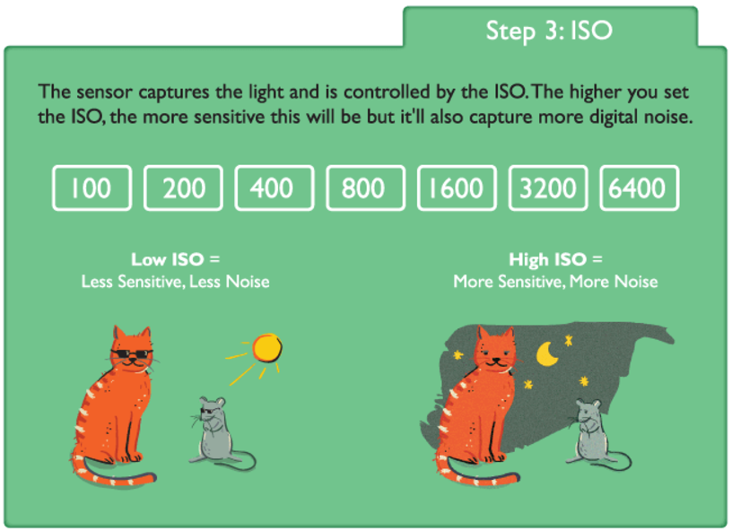
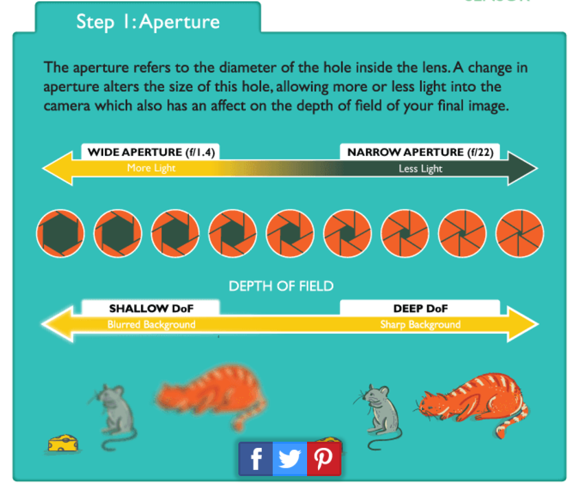
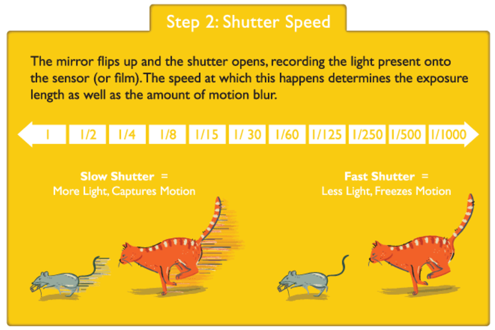

Vi startede vores undervisning i foto med et besøg i Photocare i Skive, her fik vi en introduktion til et fotostudie, med lys og kameraudstyr, og herefter tog vi tilbage på skolen og fik lov til at udforske skolens udstyr selv.
Lidt forskellige begreber fra fotoundervisning:
Hvidbalance er helt simpelt noget man justerer på kameraet for at få farverne på billedet så præcise som muligt. Der er forskellige måder at indstille hvid balance på, på kameraet, og jeg vil gennemgå de mest basale. Auto er når kameraet kommer med det bedste bud på en god hvidbalance billede for billede. Tungsten bliver brugt til at tage billeder indenfor, og vil generelt gøre farverne i billederne koldere, hvorimod flouresent gør billederen varmere og kompensere for det kolde lys. Daylight, eller dagslys bliver set som forholdsvise standard hvidbalance indstillinger, og derfor er det ikke alle kameraer der har det. Ved brug af cloudy, overskyet, bliver tingene varmet mere op end i dagslys. Flash på et kamera kan give et køligt lys, så ved at bruge denne indstilling bliver billederne varmere, og i shade, skygge, er lyset også generelt køligere, så her vil kameraet også varme farverne i billederne lidt op.
ISO, shutterspeed og aperture
Udover disse er der 3 grundindstillinger på et kamera, ISO, shutterspeed og aperture.
Jo større iso, desto kraftigere forstærker kameraet lyset der opfanges af sensoren. Hvis man bruger høje iso-tal (1600 og opefter), så er hurtigere lukketid muligt, kameraet er mere lysfølsomt, det giver et mere kornet billede, men er mest velegnet til at tage billeder i bevægelse. De mellem iso-tal (400-800) er velegnet til generelt brug, mest udendørs, og giver klare og detaljerede billeder. De lave iso-tal (200 og nedefter) gør en langsommere lukketid muligt, er mindre lysfølsom, er gode til stillestående motiver og portrætfotografering i et studie, og giver klare og detaljerede billeder.

Kameraets blændevidde (også kaldt aperture) bestemmer hvor meget lys der kan komme ind og ramme sensoren, det bestemmer både lys, men også hvor høj eller lav dybdeskarpheden er. På kameraet hedder indstillingen f, og står for focus stop (focal værdien). En stor blændeåbning lukker mere lys ind, og reducerer samtidigt behovet for høj iso og længere lukketider – det giver dog en lav skarphed og isolerer motivet fra omgivelserne. En lille blændeåbning lukker mindre lys ind, giver behov for højere iso og længere lukketid, men fungerer optimalt til panorama billeder, hvor alt skal være skarpt.

Kameraets lukketid (shutterspeed), fortæller om den tid sensoren er eksponeret for lys, og kan derfor også kaldes eksponeringstid. En hurtig lukketid afhjælper slør og rystelser, men gør også billedet mørkere (fordi der er mindre tid til at lyset kommer igennem objektivet). En langsommere lukketid giver derimod en større risiko for slør og rystelser, men gør billedet lysere da der er mere tid til at lyset strømmer igennem objektivet. En generel regel er dog at blændevidden skal være lig med lukketiden.

Til toppen